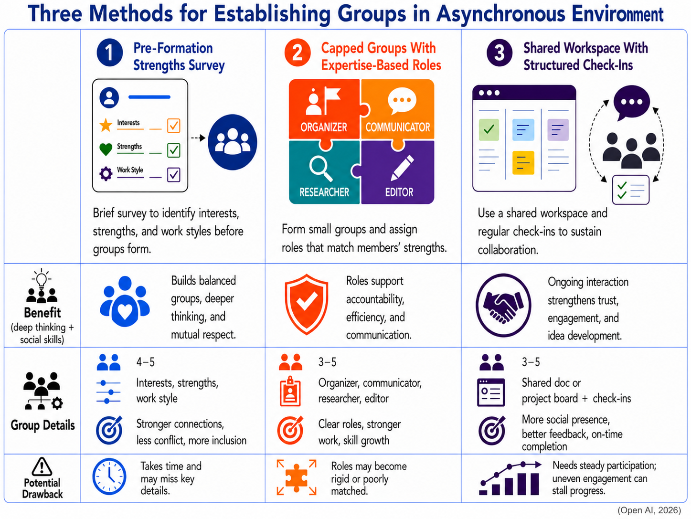

Just because a Google Doc is shared across multiple contributors or people are in the same online class does not mean collaboration is happening. When my fourth grade classroom lacks clear expectations during a shared project, or group Google Slides presentation, it is more difficult for students to build a shared vision. Poor design and lack of clarity in any learning environments can lead to disengagement and heightened emotions. In a recent study, researchers found that elementary students' social presence predicted how positively they experienced online learning (Lee et al., 2026). When designed with purpose, collaboration pushes learners past surface-level engagement into deeper thinking that builds social skills, communication and accountability.
Fostering community in learning environments takes intention and forethought for learners of all ages. Shahvar and Tang (2022) found this same pattern of social presence supporting collaboration in graduate students. Social presence is not a developmental skill that matures with age, it is a foundational layer of the learning environment itself. In my doctoral course work, discussion boards are structured to help learners develop social presence, a pillar of the Community of Inquiry framework, through exchange with people across professions, skills and perspectives. District professional development could borrow this same model, offering a structured ongoing discussion space after the session ends for educators to continue the conversation and learning.
Here are three methods for building that structure into asynchronous group formation.

1. Pre-Formation Strengths Survey
Before group work begins, participants take a short survey about their interests, strengths, and working style. Cheng et al. (2021) found that individuals benefited from the facilitator taking time to learn about the personality and preferences of each person before groups were determined. After analyzing responses, four to six groups with four to five people are created. Groups built with a strength-centered focus encounter less tension early on.
2. Capped Groups With Expertise-Based Roles
Two key factors that support group collaboration are effective group size and role clarity. Shahvar and Tang (2022) found that the most advantageous group size is three to five people, while Cheng et al. (2021) found that roles based on expertise or skills led to higher efficiency. When roles such as organizer, communicator and researcher are tailored to a person's strengths, individuals stay accountable and engaged in the work. Role ambiguity can lead to unclear communication and loss of productivity.
3. Shared Workspace With Structured Check-Ins
Grothaus (2022) found that students who operated in shared collaborative spaces concurrently reported a stronger social presence than those who relied on sequential communication with their group. Seeing each other's edits in real time gave groups a stronger connection than other groups who worked individually and then merged their contributions together at the end. As a support, check-ins with an instructor or group leader can help groups of all sizes stay on track with goals and direction.
With each method, the facilitator's role is integral to the success of each group, requiring an investment of time and consistent management. Surveys take time, fixed roles can become unproductive requiring intervention from the facilitator, and a built in feedback-cycle only works with active participation from the leader.